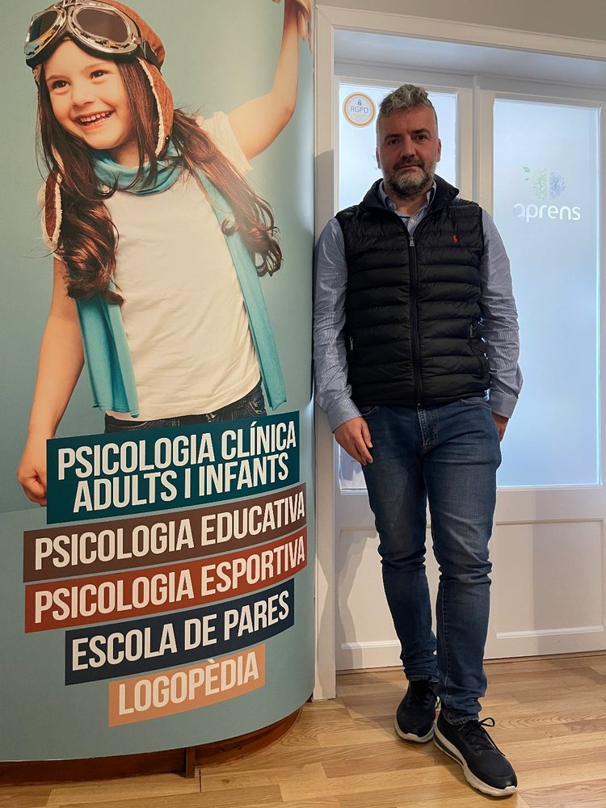

APRENS
Psicologia · Tòfol Villalonga · Inca
Psicología · Tòfol Villalonga · Inca
Explica-ho
Prova Explica-hoEstudi actiu: si no ho pots explicar, no t'ho saps. Temes d'exemple oberts. Subscriu-t'hiPer fer-la servir amb els teus apunts: 6 € al mes.Esport de base
Els pares també juguenL'app per a famílies i entrenadors. Sense registre. Per a clubsEl meu club és un lloc emocionalment segur. Pilot gratuït.Eines
App AIS APRENSAtenció Interna Sensorial, a l'App Store. Totes les eines, guies i llibresaprens.netConsulta
Demana citaReserva en línia.Explica-ho
Prueba Explica-hoEstudio activo: si no lo puedes explicar, no te lo sabes. Temas de ejemplo abiertos. SuscríbetePara usarla con tus apuntes: 6 € al mes.Deporte base
Los padres también jueganLa app para familias y entrenadores. Sin registro. Para clubesMi club es un lugar emocionalmente seguro. Piloto gratuito.Herramientas
App AIS APRENSAtención Interna Sensorial, en la App Store. Todas las herramientas, guías y librosaprens.netConsulta
Pide citaReserva en línea.APRENS Psicologia · C/ Mare de Déu de l'Esperança, 70, 2n · Inca · Avís legal